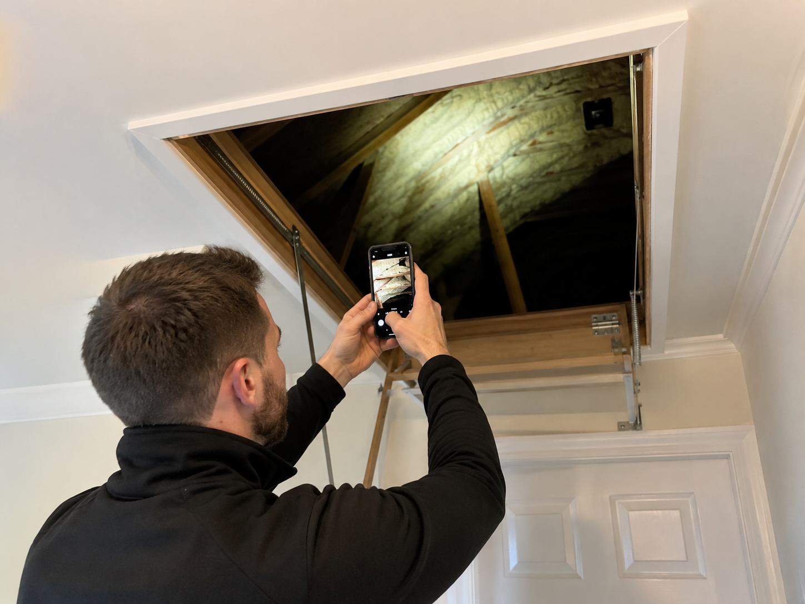

Free Remote Photo Review
Start with safe photographs and background information before any chargeable on-site assessment is considered.
Take photographs only where it is safe
Useful photos often show the loft access, general roof area, foam close-ups, ventilation routes and any paperwork you already have.
Do not walk across uncovered joists, enter an unsafe loft, disturb foam, remove materials, work at height without safe access or take risks purely to obtain photographs.
If safe photographs are not possible, explain that when you call or email.

What to send
Include safe photographs, the reason for concern, property age if known, installation paperwork and any exact surveyor or lender wording.
What the review can do
It can help identify whether more information, a chargeable on-site assessment or another specialist route is sensible.
What it is not
The remote photo review is not a survey, valuation, structural assessment or lender decision.
How to start
Complete the form below with your contact details and the reason for your enquiry. You can upload up to five safe photographs (maximum 10 MB each) directly from your phone or computer. Photos are optional, so you can still send an enquiry if it is unsafe to take them. For installation paperwork, email info@insofixltd.co.uk using your name and postcode in the subject line.
Send your photo-review enquiry
Upload up to five photographs, each no larger than 10 MB, if you can take them safely. Photographs are optional. Please do not enter an unsafe loft, walk on uncovered joists, disturb insulation or work at height to obtain them.
If the form does not load, open the photo-review form in a new tab, or email info@insofixltd.co.uk. Your enquiry and any uploaded photographs will be processed using Tally. See our privacy notice.
Request a Free Remote Photo Review
Start with photographs and background information. If the issue cannot be assessed remotely, Insofix will explain whether a chargeable on-site assessment is the sensible next step.